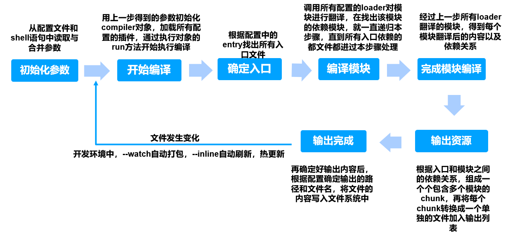

<!DOCTYPE html>
<html>
<head><meta name="generator" content="Hexo 3.9.0">
  <meta charset="utf-8">
  
  <title>初解webpack | 暴走的猿猴</title>
  <meta name="viewport" content="width=device-width, initial-scale=1, maximum-scale=1">
  <meta name="description" content="摘要：初步了解webpack的基本原理和配置">
<meta name="keywords" content="webpack的基础配置以及使用">
<meta property="og:type" content="article">
<meta property="og:title" content="初解webpack">
<meta property="og:url" content="https://charley-liu.github.io/2021/03/16/webpack/index.html">
<meta property="og:site_name" content="暴走的猿猴">
<meta property="og:description" content="摘要：初步了解webpack的基本原理和配置">
<meta property="og:locale" content="zh-CN">
<meta property="og:image" content="https://charley-liu.github.io/resource/webpack.png">
<meta property="og:updated_time" content="2021-03-16T15:09:39.038Z">
<meta name="twitter:card" content="summary">
<meta name="twitter:title" content="初解webpack">
<meta name="twitter:description" content="摘要：初步了解webpack的基本原理和配置">
<meta name="twitter:image" content="https://charley-liu.github.io/resource/webpack.png">
  
    <link rel="alternative" href="/atom.xml" title="暴走的猿猴" type="application/atom+xml">
  
  
    <link rel="icon" href="/img/favicon.ico">
  
  
      <link rel="stylesheet" href="//cdn.bootcss.com/animate.css/3.5.0/animate.min.css">
  
  <link rel="stylesheet" href="/css/style.css">
  <link rel="stylesheet" href="/font-awesome/css/font-awesome.min.css">
  <link rel="apple-touch-icon" href="/apple-touch-icon.png">
  
  
      <link rel="stylesheet" href="/fancybox/jquery.fancybox.css">
  
  <!-- 加载特效 -->
    <script src="/js/pace.js"></script>
    <link href="/css/pace/pace-theme-flash.css" rel="stylesheet">
  <script>
      var yiliaConfig = {
          rootUrl: '/',
          fancybox: true,
          animate: true,
          isHome: false,
          isPost: true,
          isArchive: false,
          isTag: false,
          isCategory: false,
          open_in_new: false
      }
  </script>
</head></html>
<body>
  <div id="container">
    <div class="left-col">
    <div class="overlay"></div>
<div class="intrude-less">
    <header id="header" class="inner">
        <a href="/" class="profilepic">
            
            
            
        </a>

        <hgroup>
          <h1 class="header-author"><a href="/" title="Hi Mate">Charley Liu</a></h1>
        </hgroup>

        
        <p class="header-subtitle">压力是动力他妈</p>
        
        
        

        <div id="switch-area" class="switch-area">
            <div class="switch-wrap">
                <section class="switch-part switch-part1">
                    <nav class="header-menu">
                        <ul>
                        
                            <li><a href="https://charley-liu.github.io">博客首页</a></li>
                        
                            <li><a href="/works">作品展示</a></li>
                        
                            <li><a href="/about">关于作者</a></li>
                        
                        </ul>
                    </nav>
                    <nav class="header-nav">
                        <ul class="social">
                            
                                <a class="fl mail" target="_blank" href="http://mail.qq.com/cgi-bin/qm_share?t=qm_mailme&email=wLe1rKWp8-n39fL18Pn5gLGx7qOvrQ" title="mail">mail</a>
                            
                                <a class="fl github" target="_blank" href="https://github.com/Charley-liu" title="github">github</a>
                            
                                <a class="fl zhihu" target="_blank" href="https://www.zhihu.com/people/bob-86-15-72/activities" title="zhihu">zhihu</a>
                            
                                <a class="fl weibo" target="_blank" href="http://weibo.com/p/1005052706169463/home?from=page_100505&mod=TAB&is_hot=1#place" title="weibo">weibo</a>
                            
                        </ul>
                    </nav>
                </section>
                
                
                
                

                
                
                <section class="switch-part switch-part3">
                
                    <div id="js-aboutme">喜欢接触新鲜事物、迎接新的挑战，更爱游离于错综复杂的编码与逻辑中</div>
                </section>
                
            </div>
        </div>
    </header>                
</div>
    </div>
    <div class="mid-col">
      <nav id="mobile-nav">
      <div class="overlay">
          <div class="slider-trigger"></div>
          <h1 class="header-author js-mobile-header hide"><a href="/" title="Me">Charley Liu</a></h1>
      </div>
    <div class="intrude-less">
        <header id="header" class="inner">
            <a href="/" class="profilepic">
                
                    
                
            </a>
            <hgroup>
              <h1 class="header-author"><a href="/" title="Me">Charley Liu</a></h1>
            </hgroup>
            
            <p class="header-subtitle">压力是动力他妈</p>
            
            <nav class="header-menu">
                <ul>
                
                    <li><a href="https://charley-liu.github.io">博客首页</a></li>
                
                    <li><a href="/works">作品展示</a></li>
                
                    <li><a href="/about">关于作者</a></li>
                
                <div class="clearfix"></div>
                </ul>
            </nav>
            <nav class="header-nav">
                <div class="social">
                    
                        <a class="mail" target="_blank" href="http://mail.qq.com/cgi-bin/qm_share?t=qm_mailme&email=wLe1rKWp8-n39fL18Pn5gLGx7qOvrQ" title="mail">mail</a>
                    
                        <a class="github" target="_blank" href="https://github.com/Charley-liu" title="github">github</a>
                    
                        <a class="zhihu" target="_blank" href="https://www.zhihu.com/people/bob-86-15-72/activities" title="zhihu">zhihu</a>
                    
                        <a class="weibo" target="_blank" href="http://weibo.com/p/1005052706169463/home?from=page_100505&mod=TAB&is_hot=1#place" title="weibo">weibo</a>
                    
                </div>
            </nav>
        </header>                
    </div>
</nav>
      <div class="body-wrap"><article id="post-webpack" class="article article-type-post" itemscope itemprop="blogPost">
  
    <div class="article-meta">
      <a href="/2021/03/16/webpack/" class="article-date">
      <time datetime="2021-03-16T14:10:11.000Z" itemprop="datePublished">2021-03-16</time>
</a>
    </div>
  
  <div class="article-inner">
    
      <input type="hidden" class="isFancy" />
    
    
      <header class="article-header">
        
  
    <h1 class="article-title" itemprop="name">
      初解webpack
    </h1>
  

      </header>
      
      <div class="article-info article-info-post">
        
    <div class="article-category tagcloud">
    <a class="article-category-link" href="/categories/日志/">日志</a><a class="article-category-link" href="/categories/日志/二级目录/">二级目录</a>
    </div>


        
    <div class="article-tag tagcloud">
        <ul class="article-tag-list"><li class="article-tag-list-item"><a class="article-tag-list-link" href="/tags/webpack的基础配置以及使用/">webpack的基础配置以及使用</a></li></ul>
    </div>

        <div class="clearfix"></div>
      </div>
      
    
    <div class="article-entry" itemprop="articleBody">
      
          
        <p>摘要：初步了解webpack的基本原理和配置<br><a id="more"></a><br>正文：<br>　　webpack是继gulp之后的一个真正意义上的项目构建工具</p>
<p>一、构建工具发展史</p>
<blockquote>
<ol>
<li>Npm Script  (npm中内置的管理工具，因功能单一，需要结合其他构建工具共同使用，后续的webpack中需要结合它，作为多任务管理使用)</li>
<li>Grunt（Npm Script进阶版，但是需要大量配置才能使用，过于繁琐）</li>
<li>Gulp （真正意义上的构建工具，引入流概念）（task-&gt;run-&gt;watch-&gt;src-&gt;dest）</li>
<li>Fis3（百度，国产构建工具，官方不在更新，不支持最新版node）</li>
<li>Webpack</li>
<li>Rollup（类似webpack的后现代产物，生态链不够完善，需要踩坑）</li>
<li>……</li>
</ol>
</blockquote>
<p>二、选用webpack的原因</p>
<blockquote>
<ol>
<li>社区论坛丰富，共用插件库更新活跃</li>
<li>有良好的生态链和维护团队，能提供良好的开发体验并保证质量</li>
<li>目前webpack有大量开发者使用和验证，更好的优化了使用过程中有可能出现的问题并及时解决</li>
<li>根据不同时期的构建工具对比，webpack融合了多数构建工具的优点并不断完善，能更好的给项目提供一站式的解决方案</li>
</ol>
</blockquote>
<p>三、Webpack核心配置项</p>
<blockquote>
<p>Entry   （主入口文件）<br>Output （配置如何输出最终想要的代码）<br>Module （配置处理模块的相关规则）<br>Plugins (所需构建插件配置相关，在构建过程中注入钩子，从而实现相关个性化需求)<br>DevServer (本地服务，用于接收webpack通知并重新构建)<br>Resolve （命中规则配置）<br>……</p>
</blockquote>
<p>四、webpack之Entry属性<br><figure class="highlight ruby"><table><tr><td class="gutter"><pre><span class="line">1</span><br><span class="line">2</span><br><span class="line">3</span><br><span class="line">4</span><br><span class="line">5</span><br><span class="line">6</span><br><span class="line">7</span><br></pre></td><td class="code"><pre><span class="line">/<span class="regexp">/多个入口</span></span><br><span class="line"><span class="regexp">entry: &#123;</span></span><br><span class="line"><span class="regexp"> a: './app</span><span class="regexp">/entry',</span></span><br><span class="line"><span class="regexp"> b: ['./app</span><span class="regexp">/entry1','./app</span><span class="regexp">/entry2']</span></span><br><span class="line"><span class="regexp">&#125; </span></span><br><span class="line"><span class="regexp">/</span><span class="regexp">/一个入口</span></span><br><span class="line"><span class="regexp">entry: [ './app</span><span class="regexp">/entry1', './app</span><span class="regexp">/entry2']</span></span><br></pre></td></tr></table></figure></p>
<p>五、webpack之Output属性</p>
<blockquote>
<ol>
<li>filename (输出文件名称，分动态和静态两种，静态是写死的字符串，动态可根据动态生成的chunk中name属性作为文件名称，通常以[name]方式指定)</li>
<li>path （输出文件存放在本地的目录，通过调用nodejs的path方法）<figure class="highlight ruby"><table><tr><td class="gutter"><pre><span class="line">1</span><br><span class="line">2</span><br><span class="line">3</span><br><span class="line">4</span><br><span class="line">5</span><br></pre></td><td class="code"><pre><span class="line"><span class="symbol">output:</span>&#123;</span><br><span class="line">    <span class="symbol">path:</span> path.resolve(_dirname,<span class="string">'dist'</span>), <span class="regexp">//</span>输出文件存放的目录</span><br><span class="line">    <span class="symbol">filename:</span> <span class="string">'[name].[chunkhash].js'</span> /<span class="regexp">/输出文件名称</span></span><br><span class="line"><span class="regexp">    publicPath: '/assets</span><span class="regexp">/'/</span><span class="regexp">/放到指定目录下</span></span><br><span class="line"><span class="regexp">&#125;</span></span><br></pre></td></tr></table></figure>
</li>
</ol>
</blockquote>
<p>六、webpack之Module属性</p>
<blockquote>
<p>rules(主要用于配置loader)<br>rules是数组形式，每一项配置都有条件匹配(正则,支持数组形式)，应用规则(数组形式，从后向前应用每个loader)<br><figure class="highlight ruby"><table><tr><td class="gutter"><pre><span class="line">1</span><br><span class="line">2</span><br><span class="line">3</span><br><span class="line">4</span><br><span class="line">5</span><br><span class="line">6</span><br><span class="line">7</span><br><span class="line">8</span><br></pre></td><td class="code"><pre><span class="line"><span class="symbol">Module:</span>&#123;</span><br><span class="line">    <span class="symbol">rules:</span>[</span><br><span class="line">        <span class="symbol">test:</span> /\.css/, <span class="regexp">//</span>识别以css为结尾的文件</span><br><span class="line">        <span class="symbol">use:</span> ExtractTextPlugin.extract(&#123;</span><br><span class="line">            <span class="symbol">use:</span> [<span class="string">'css-loader?minimize'</span>]</span><br><span class="line">        &#125;)</span><br><span class="line">    ]</span><br><span class="line">&#125;</span><br></pre></td></tr></table></figure></p>
</blockquote>
<p>七、webpack之Plugins属性</p>
<blockquote>
<p>Plugin用于拓展webpack的功能，通过在构建流程里注入钩子实现，它为webpack带来很大的灵活性<br><figure class="highlight ruby"><table><tr><td class="gutter"><pre><span class="line">1</span><br><span class="line">2</span><br><span class="line">3</span><br><span class="line">4</span><br><span class="line">5</span><br></pre></td><td class="code"><pre><span class="line">例如：<span class="symbol">plugins:</span>[</span><br><span class="line">    new  ExtractTextPlugin(&#123;</span><br><span class="line">        <span class="symbol">filename:</span> <span class="string">`[name]_[contenthash:8].css`</span></span><br><span class="line">    &#125;)</span><br><span class="line">]</span><br></pre></td></tr></table></figure></p>
</blockquote>
<blockquote>
<p>需要运行以上代码，需要安装extract-text-webpack-plugin插件，如果你在output属性中path的第二个参数为/dist，那么在dist文件夹下就会生成一个main_xxxxxx.css的文件<br>该插件的作用就是提取出js代码里的css到单独的文件，并且通过filename的模板生成文件名</p>
</blockquote>
<p>八、webpack之devServer模块</p>
<blockquote>
<p>devServr主要用于在开发环境下的热更新操作<br><figure class="highlight ruby"><table><tr><td class="gutter"><pre><span class="line">1</span><br><span class="line">2</span><br><span class="line">3</span><br><span class="line">4</span><br><span class="line">5</span><br><span class="line">6</span><br><span class="line">7</span><br><span class="line">8</span><br><span class="line">9</span><br><span class="line">10</span><br><span class="line">11</span><br><span class="line">12</span><br></pre></td><td class="code"><pre><span class="line"><span class="symbol">devServer:</span> &#123; </span><br><span class="line">    /<span class="regexp">/模块热替换</span></span><br><span class="line"><span class="regexp">    hot:true,</span></span><br><span class="line"><span class="regexp">    /</span><span class="regexp">/ 项目构建路径</span></span><br><span class="line"><span class="regexp">        contentBase: resolve(__dirname, 'bundle'),</span></span><br><span class="line"><span class="regexp">        /</span><span class="regexp">/ 启动gzip压缩 </span></span><br><span class="line"><span class="regexp">    compress: true, </span></span><br><span class="line"><span class="regexp">    /</span><span class="regexp">/ 启用端口号 </span></span><br><span class="line"><span class="regexp">    port: 3000, </span></span><br><span class="line"><span class="regexp">    /</span><span class="regexp">/ 自动打开浏览器 </span></span><br><span class="line"><span class="regexp">    open: true </span></span><br><span class="line"><span class="regexp">&#125;</span></span><br></pre></td></tr></table></figure></p>
</blockquote>
<p>九、webpack之Resolve模块</p>
<blockquote>
<p>主要是对文件的命中规则进行配置<br><figure class="highlight ruby"><table><tr><td class="gutter"><pre><span class="line">1</span><br><span class="line">2</span><br><span class="line">3</span><br><span class="line">4</span><br><span class="line">5</span><br><span class="line">6</span><br><span class="line">7</span><br><span class="line">8</span><br></pre></td><td class="code"><pre><span class="line"><span class="symbol">Resolve:</span>&#123;</span><br><span class="line">    <span class="symbol">alias:</span> &#123;</span><br><span class="line">        <span class="string">'button$'</span>: <span class="string">'./src/compontents/'</span>，/<span class="regexp">/只命中以button结尾的</span></span><br><span class="line"><span class="regexp">    &#125;,</span></span><br><span class="line"><span class="regexp">    modules:['./src</span><span class="regexp">/components'，'node_modules'], /</span><span class="regexp">/寻找第三方引入模块，默认去node_modules目录下找，有些是自定义的模块所有如果都在components文件夹下，就可以这样写</span></span><br><span class="line"><span class="regexp">    extensions:['.js'，'.json']，/</span><span class="regexp">/后缀补全</span></span><br><span class="line"><span class="regexp">    mainFields: ['jsnext:main', 'browser', 'main'] /</span><span class="regexp">/有的模块会导出两份代码，通过设置确定优先选择哪个代码</span></span><br><span class="line"><span class="regexp">&#125;</span></span><br></pre></td></tr></table></figure></p>
</blockquote>
<p>十、webpack的执行过程</p>
<p></p>
<p>以上内容只是大概介绍了一下webpack的基本配置和使用，最后的原理很重要，webpack的构建过程就是在不断监听文件变化并重新编译，我在这家公司一个月会分享一次相关技术，拓展自己的知识面，共勉！</p>

      
      
        <div class="page-reward">
          <p><a href="javascript:void(0)" onclick="dashangToggle()" class="dashang" title="打赏，支持一下">赏</a></p>
          <div class="hide_box"></div>
          <div class="shang_box">
            <a class="shang_close" href="javascript:void(0)" onclick="dashangToggle()" title="关闭">×</a>
            <div class="shang_tit">
              <p>有钱的捧个钱场！没钱的捧个人场</p>
            </div>
            <div class="shang_payimg">
              
            </div>
              <div class="pay_explain">扫码打赏，你说多少就多少</div>
            <div class="shang_payselect">
              
                <div class="pay_item checked" data-id="alipay">
                  <span class="radiobox"></span>
                  <span class="pay_logo"></span>
                </div>
              
              
                <div class="pay_item" data-id="wechat">
                  <span class="radiobox"></span>
                  <span class="pay_logo"></span>
                </div>
              
            </div>
            <div class="shang_info">
              <p>打开<span id="shang_pay_txt">支付宝</span>扫一扫，即可进行扫码打赏哦</p>
            </div>
          </div>
        </div>
        <script type="text/javascript" src="https://cdnjs.cloudflare.com/ajax/libs/zepto/1.2.0/zepto.min.js"></script>
        <script type="text/javascript">
          $(".pay_item").click(function(){
            $(this).addClass('checked').siblings('.pay_item').removeClass('checked');
            var dataid=$(this).attr('data-id');
            $(".shang_payimg img").attr("src","/img/"+dataid+"img.jpg");
            $("#shang_pay_txt").text(dataid=="alipay"?"支付宝":"微信");
          });
          function dashangToggle(){
            $(".hide_box").fadeToggle();
            $(".shang_box").fadeToggle();
          }
        </script>
      
    </div>
    
  </div>
  
    
    <div class="copyright">
        <p><span>本文标题:</span><a href="/2021/03/16/webpack/">初解webpack</a></p>
        <p><span>文章作者:</span><a href="/" title="访问 Charley Liu 的个人博客">Charley Liu</a></p>
        <p><span>发布时间:</span>2021年03月16日 - 22时10分</p>
        <p><span>最后更新:</span>2021年03月16日 - 23时09分</p>
        <p>
            <span>原始链接:</span><a class="post-url" href="/2021/03/16/webpack/" title="初解webpack">https://charley-liu.github.io/2021/03/16/webpack/</a>
            <span class="copy-path" data-clipboard-text="原文: https://charley-liu.github.io/2021/03/16/webpack/　　作者: Charley Liu" title="点击复制文章链接"><i class="fa fa-clipboard"></i></span>
            <script src="/js/clipboard.min.js"></script>
            <script> var clipboard = new Clipboard('.copy-path'); </script>
        </p>
        <p>
            <span>许可协议:</span><i class="fa fa-creative-commons"></i> <a rel="license" href="http://creativecommons.org/licenses/by-nc-sa/3.0/cn/" title="中国大陆 (CC BY-NC-SA 3.0 CN)" target = "_blank">"署名-非商用-相同方式共享 3.0"</a> 转载请保留原文链接及作者。
        </p>
    </div>


<nav id="article-nav">
  
  
    <a href="/2019/11/15/question/" id="article-nav-older" class="article-nav-link-wrap">
      <div class="article-nav-title">工作中遇到的问题记录（一）</div>
      <strong class="article-nav-caption">></strong>
    </a>
  
</nav>

  
</article>

    <div id="toc" class="toc-article">
    <strong class="toc-title">文章目录</strong>
    
</div>
<input type="button" id="tocButton" value="隐藏目录"  title="点击按钮隐藏或者显示文章目录">

<script src="https://7.url.cn/edu/jslib/comb/require-2.1.6,jquery-1.9.1.min.js"></script>
<script>
    var valueHide = "隐藏目录";
    var valueShow = "显示目录";

    if ($(".left-col").is(":hidden")) {
        $("#tocButton").attr("value", valueShow);
    }
    $("#tocButton").click(function() {
        if ($("#toc").is(":hidden")) {
            $("#tocButton").attr("value", valueHide);
            $("#toc").slideDown(320);
        }
        else {
            $("#tocButton").attr("value", valueShow);
            $("#toc").slideUp(350);
        }
    })
    if ($(".toc").length < 1) {
        $("#toc, #tocButton").hide();
    }
</script>


<div class="bdsharebuttonbox">
	<a href="#" class="fx fa-weibo bds_tsina" data-cmd="tsina" title="分享到新浪微博"></a>
	<a href="#" class="fx fa-weixin bds_weixin" data-cmd="weixin" title="分享到微信"></a>
	<a href="#" class="fx fa-qq bds_sqq" data-cmd="sqq" title="分享到QQ好友"></a>
	<a href="#" class="fx fa-facebook-official bds_fbook" data-cmd="fbook" title="分享到Facebook"></a>
	<a href="#" class="fx fa-twitter bds_twi" data-cmd="twi" title="分享到Twitter"></a>
	<a href="#" class="fx fa-linkedin bds_linkedin" data-cmd="linkedin" title="分享到linkedin"></a>
	<a href="#" class="fx fa-files-o bds_copy" data-cmd="copy" title="分享到复制网址"></a>
</div>
<script>window._bd_share_config={"common":{"bdSnsKey":{},"bdText":"","bdMini":"2","bdMiniList":false,"bdPic":"","bdStyle":"2","bdSize":"24"},"share":{}};with(document)0[(getElementsByTagName('head')[0]||body).appendChild(createElement('script')).src='/static/api/js/share.js?v=89860593.js?cdnversion='+~(-new Date()/36e5)];</script>


    
        <section class="youyan" id="comments">
  <div id="uyan_frame"></div>
  <script src="http://v2.uyan.cc/code/uyan.js?uid=2155465"></script>
</section>

    


    <div class="scroll" id="post-nav-button">
        
            <a href="/" title="回到主页"><i class="fa fa-home"></i></a>
        
        <a title="文章列表"><i class="fa fa-bars"></i><i class="fa fa-times"></i></a>
        
            <a href="/2019/11/15/question/" title="下一篇: 工作中遇到的问题记录（一）">
                <i class="fa fa-angle-right"></i>
            </a>
        
    </div>
    <ul class="post-list"><li class="post-list-item"><a class="post-list-link" href="/2021/03/16/webpack/">初解webpack</a></li><li class="post-list-item"><a class="post-list-link" href="/2019/11/15/question/">工作中遇到的问题记录（一）</a></li><li class="post-list-item"><a class="post-list-link" href="/2019/06/14/Git/">关于Git的使用</a></li><li class="post-list-item"><a class="post-list-link" href="/2018/12/17/JSDoc/">JS的注释</a></li><li class="post-list-item"><a class="post-list-link" href="/2018/11/14/ESLint/">关于ESLint的安装和使用</a></li><li class="post-list-item"><a class="post-list-link" href="/2018/10/17/npm/">npm的初解</a></li><li class="post-list-item"><a class="post-list-link" href="/2018/09/12/nvm/">使用nvm-windows控制nodeJs版本</a></li><li class="post-list-item"><a class="post-list-link" href="/2018/03/02/update/">利用vue-cli搭建vue项目（基础）</a></li><li class="post-list-item"><a class="post-list-link" href="/2017/06/19/VUE/">初解vue</a></li><li class="post-list-item"><a class="post-list-link" href="/2017/04/20/ionic/">关于移动开发框架</a></li><li class="post-list-item"><a class="post-list-link" href="/2017/04/01/hello/">初识HTML和css</a></li><li class="post-list-item"><a class="post-list-link" href="/2017/03/01/GitHub/">关于Github搭建博客</a></li></ul>
    <script src="https://7.url.cn/edu/jslib/comb/require-2.1.6,jquery-1.9.1.min.js"></script>
    <script>
        $(".post-list").addClass("toc-article");
        $(".post-list-item a").attr("target","_blank");
        $("#post-nav-button > a:nth-child(2)").click(function() {
            $(".fa-bars, .fa-times").toggle();
            $(".post-list").toggle(300);
            if ($(".toc").length > 0) {
                $("#toc, #tocButton").toggle(200, function() {
                    if ($(".switch-area").is(":visible")) {
                        $("#tocButton").attr("value", valueHide);
                        }
                    })
            }
            else {
            }
        })
    </script>


    <script>
        
    </script>
</div>
      <footer id="footer">
    <div class="outer">
        <div id="footer-info">
            <div class="visit">
                暴走的猿猴 &hearts;&spades;&clubs;&diams; 2021 Charley Liu
            </div>
            <div class="footer-left">
                
            </div>
        </div>
        
    </div>
</footer>

    </div>
    <script src="https://7.url.cn/edu/jslib/comb/require-2.1.6,jquery-1.9.1.min.js"></script>
<script src="/js/main.js"></script>

    <script>
        $(document).ready(function() {
            var backgroundnum = 24;
            var backgroundimg = "url(/background/bg-x.jpg)".replace(/x/gi, Math.ceil(Math.random() * backgroundnum));
            $("#mobile-nav").css({"background-image": backgroundimg,"background-size": "cover","background-position": "center"});
            $(".left-col").css({"background-image": backgroundimg,"background-size": "cover","background-position": "center"});
        })
    </script>


<div class="scroll" id="scroll">
    <a href="#"><i class="fa fa-arrow-up"></i></a>
    <a href="#comments"><i class="fa fa-comments-o"></i></a>
    <a href="#footer"><i class="fa fa-arrow-down"></i></a>
</div>
<script>
    $(document).ready(function() {
        if ($("#comments").length < 1) {
            $("#scroll > a:nth-child(2)").hide();
        };
    })
</script>

<script async src="https://dn-lbstatics.qbox.me/busuanzi/2.3/busuanzi.pure.mini.js">
</script>

  <script language="javascript">
    $(function() {
        $("a[title]").each(function() {
            var a = $(this);
            var title = a.attr('title');
            if (title == undefined || title == "") return;
            a.data('title', title).removeAttr('title').hover(

            function() {
                var offset = a.offset();
                $("<div id=\"anchortitlecontainer\"></div>").appendTo($("body")).html(title).css({
                    top: offset.top - a.outerHeight() - 15,
                    left: offset.left + a.outerWidth()/2 + 1
                }).fadeIn(function() {
                    var pop = $(this);
                    setTimeout(function() {
                        pop.remove();
                    }, pop.text().length * 800);
                });
            }, function() {
                $("#anchortitlecontainer").remove();
            });
        });
    });
</script>


  </div>
</body>
</html>